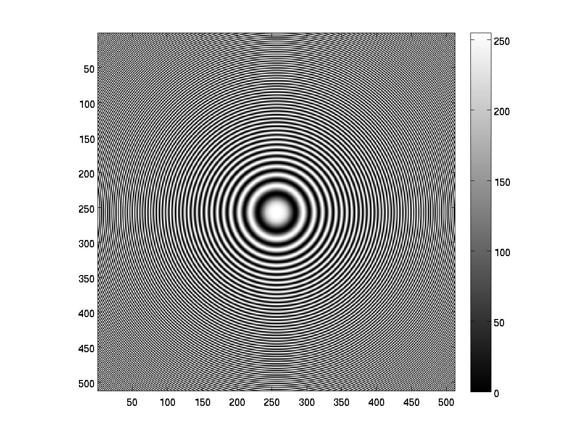
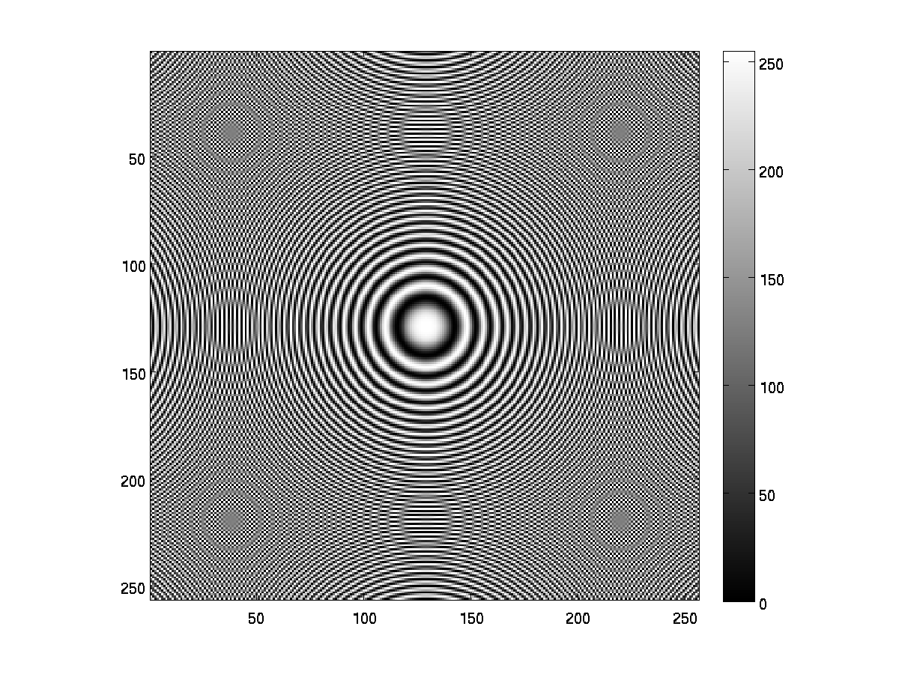
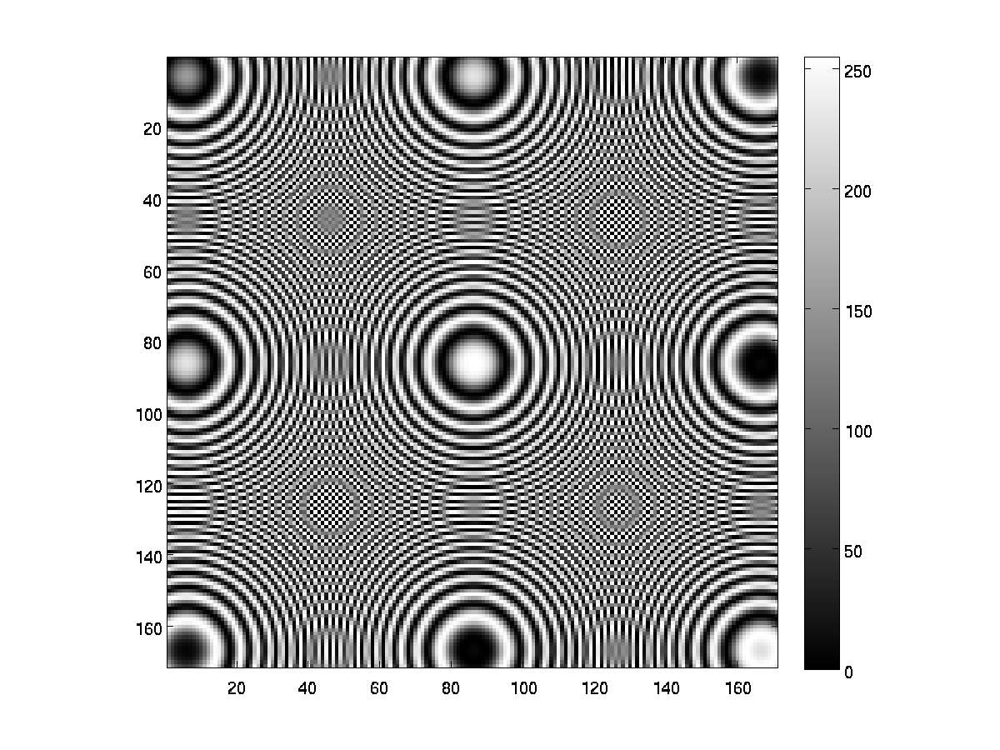
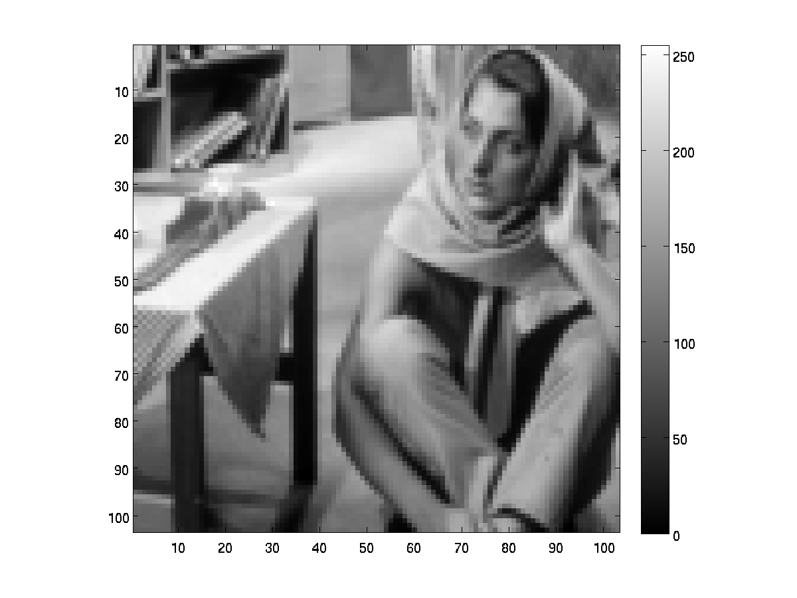
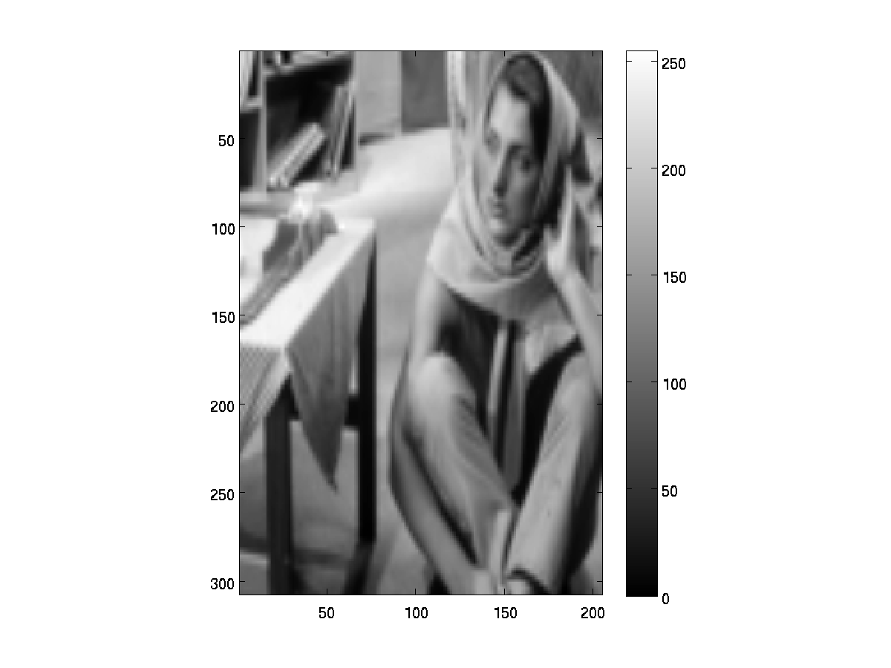

Digital Image Processing - Assignment 1
Team Members
- Mayank Meghwanshi - 110050012
- Vivek Atulkar - 110050039
Image Resizing
-
Image Shrinking
Circles concentric - shrinking subsampling - with d=2 and d=3

Original Image

d=2 Image

d=3 Image
-
Image Enlargement using Bilinear Interpolation
barbaraSmall - Enlargement - rows = 3M-2, columns = 2N-1

Original Image

Bilinear Interpolation Image
-
Image Enlargement using Nearest-Neighbor Interpolation
barbaraSmall - Enlargement - rows = 3M-2, columns = 2N-1
Original Image
Nearest Neighbor Image